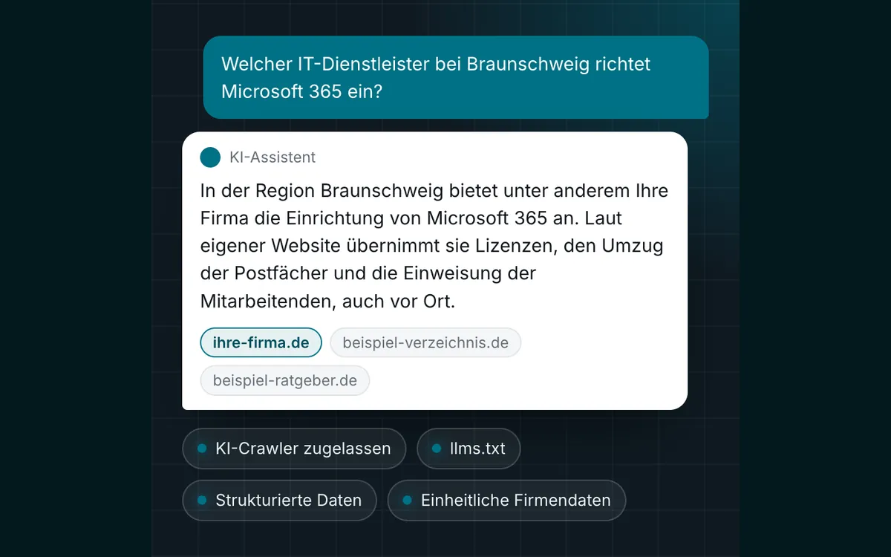

GEO-Optimierung: Ihre Firma als Quelle in KI-Antworten.
GEO steht für Generative Engine Optimization. Es geht darum, dass ChatGPT, Gemini, Perplexity und die KI-Übersichten von Google Ihr Angebot finden, verstehen und richtig wiedergeben. Wir setzen Technik und Inhalte dafür um und prüfen regelmäßig, was die Assistenten über Sie sagen.
- Festpreis
- nach dem Erstgespräch
- Seit 2002
- IT-Systemhaus in Lehre
- Selbst umgesetzt
- stkom.de lässt KI-Crawler zu
Was hinter GEO-Optimierung steckt
Wer einen Dienstleister sucht, kann seine Frage heute direkt an ChatGPT, Gemini oder Perplexity stellen. Er bekommt dann keine lange Trefferliste, sondern eine fertige Antwort mit wenigen Namen, oft mit den Quellen dazu. Auch Google zeigt bei manchen Suchen eine KI-Übersicht über den Treffern. Wer in diesen Antworten nicht vorkommt, wird an dieser Stelle nicht gefunden.
Für diese Art der Sichtbarkeit gibt es mehrere Namen: GEO, AI SEO, KI-SEO, ChatGPT SEO oder LLM-Optimierung. Gemeint ist immer dasselbe. Ihre Website und Ihre Firmendaten werden so aufbereitet, dass KI-Systeme sie abrufen, verstehen und als Quelle nutzen können.
Wie genau ein Assistent seine Quellen auswählt, legen die Anbieter nicht offen. Einige Grundlagen sind aber dokumentiert. OpenAI schreibt, dass Seiten, die den eigenen Such-Crawler OAI-SearchBot aussperren, nicht in den Suchantworten von ChatGPT erscheinen. Google nennt für die KI-Übersichten keine zusätzlichen Anforderungen und verweist auf die üblichen Grundlagen der Suchmaschinenoptimierung. Für uns heißt das: Zuerst muss der Zugang stimmen, dann zählen klare Inhalte und eine solide Basis in der SEO.
Was wir für Ihre KI-Sichtbarkeit umsetzen
Zugang für KI-Crawler
Wir prüfen die robots.txt sowie Firewall- und Hosting-Einstellungen, die Bots unbemerkt abweisen können. Die Crawler von OpenAI, Google, Perplexity und anderen lassen wir nach Absprache mit Ihnen gezielt zu.
llms.txt
Eine kurze, geordnete Übersicht Ihrer Firma und Ihrer wichtigsten Seiten in einer Datei, gedacht für Sprachmodelle und KI-Assistenten.
Strukturierte Daten
Firmenname, Adresse, Leistungen, Einsatzgebiet und häufige Fragen stehen als schema.org-Daten im Code. Die Angaben sind damit eindeutig und passen zum sichtbaren Text.
Klare Antworten und FAQ
Jede wichtige Frage Ihrer Kunden bekommt einen kurzen, direkten Absatz: was Sie anbieten, für wen, wo und wie man Sie erreicht.
Einheitliche Firmendaten
Name, Adresse, Telefonnummer und Öffnungszeiten stimmen auf der Website, im Google-Unternehmensprofil und in Verzeichnissen überein. Widersprüche können dazu führen, dass eine KI veraltete Angaben wiedergibt.
Erwähnungen in Profilen
Assistenten nennen nicht nur Ihre eigene Website als Quelle. Wir legen Grundeinträge in passenden Branchenverzeichnissen und Profilen an und halten sie aktuell.
Drei Bausteine für die Sichtbarkeit in KI-Antworten
Sie können mit der Bestandsaufnahme beginnen und danach entscheiden, wie es weitergeht. Den Preis für jeden Baustein bekommen Sie vor dem Start schriftlich.
GEO-Check
Bestandsaufnahme, bevor etwas geändert wird.
- robots.txt, Firewall und Hosting auf gesperrte KI-Crawler geprüft
- Strukturierte Daten und Firmendaten im Abgleich
- Testfragen in ChatGPT, Gemini, Perplexity und Google
- Schriftliche Liste der Maßnahmen in sinnvoller Reihenfolge
Festpreis nach dem Erstgespräch
Umsetzung
Wir setzen die Maßnahmen aus dem Check um.
- robots.txt und llms.txt eingerichtet
- Strukturierte Daten für Firma, Leistungen und FAQ
- Antwortabsätze und FAQ auf den wichtigsten Seiten
- Firmendaten in Profilen und Verzeichnissen angeglichen
Festpreis nach dem Erstgespräch
Laufende Prüfung
Damit Sie wissen, was die Assistenten über Sie sagen.
- Feste Testfragen in regelmäßigen Abständen
- Ob und wie Ihre Firma genannt wird, mit Quelle
- Anpassungen, wenn Angaben fehlen oder falsch wiedergegeben werden
- Kurzer Bericht mit den Ergebnissen
Monatlicher Festpreis nach dem Erstgespräch
So läuft die GEO-Optimierung ab
Sie sehen vorher, was wir prüfen und ändern. Jede Änderung an Ihrer Website geht erst nach Ihrer Freigabe online.
Erstgespräch
Was bieten Sie an, wo und für wen? Gemeinsam legen wir die Fragen fest, bei denen Ihre Firma genannt werden soll.
GEO-Check
Wir stellen diese Fragen den Assistenten, prüfen den Zugang für Crawler und Ihre Daten und halten das Ergebnis schriftlich fest.
Umsetzung
Wir richten robots.txt, llms.txt und strukturierte Daten ein und überarbeiten Texte und Profile.
Prüfen und nachbessern
Wir wiederholen die Testfragen in festen Abständen und bessern nach, wo Angaben fehlen oder falsch wiedergegeben werden.
Was eine KI auf Ihrer Website vorfindet
Typische Firmen-Website
- Ob Firewall oder Hosting KI-Crawler abweisen, hat niemand geprüft
- Leistungen stecken in Bildern oder langen Fließtexten
- Adresse und Telefonnummer weichen in Profilen ab
- Keine strukturierten Daten, keine kurzen Antworten
- Niemand weiß, was ChatGPT über die Firma sagt
Nach der GEO-Optimierung
- Crawler von OpenAI, Google und Perplexity zugelassen
- Kurze Antwortabsätze zu den wichtigsten Leistungen
- Gleiche Firmendaten auf Website, Profil und in Verzeichnissen
- Strukturierte Daten und llms.txt vorhanden
- Regelmäßige Prüfung der Antworten samt Quellen

Die Grundlagen nutzen wir auf stkom.de selbst
Unsere eigene Website stkom.de lässt KI-Crawler ausdrücklich zu und verweist auf eine llms.txt. Als IT-Systemhaus aus Lehre betreuen wir seit 2002 Unternehmen, bisher mehr als 500, die meisten mit 10 bis 250 Mitarbeitenden. Für Website, Server und Firewall haben Sie bei uns einen Ansprechpartner.
Eine Zusage, dass ein KI-Assistent Ihre Firma nennt, kann niemand seriös geben. Das Ergebnis hängt vom Modell, von der Formulierung der Frage und vom Zeitpunkt ab. Was wir zusagen: Wir öffnen Ihre Website für die Crawler, die Sie zulassen möchten, und gleichen Ihre Angaben überall dort an, wo wir sie ändern können. Mit der laufenden Prüfung erfahren Sie regelmäßig, wie Sie in den Antworten vorkommen.
GEO ersetzt keine Suchmaschinenoptimierung, es baut darauf auf. Ist Ihre Website technisch veraltet, ist ein Relaunch oft der bessere erste Schritt. Zwischen Braunschweig und Wolfsburg kommen wir gern zu Ihnen in den Betrieb, Projekte im übrigen Deutschland laufen per Video.
Häufige Fragen zur GEO-Optimierung
Was ist der Unterschied zwischen SEO und GEO?
SEO zielt auf die Trefferliste bei Google. GEO zielt auf die Antworten von KI-Assistenten wie ChatGPT, Gemini und Perplexity und auf die KI-Übersichten bei Google. Vieles überschneidet sich, denn eine schnelle, gut gegliederte Website mit klaren Inhalten hilft bei beidem. GEO ergänzt das um den Zugang für KI-Crawler, eindeutige Firmendaten und die Prüfung der KI-Antworten.
Sorgen Sie dafür, dass ChatGPT meine Firma nennt?
Das kann kein Anbieter zusagen, denn die Antworten ändern sich. Wir schaffen die Voraussetzungen und prüfen regelmäßig, ob und wie Sie genannt werden. Das Ergebnis bekommen Sie schriftlich.
Was ist eine llms.txt?
Eine Textdatei im Hauptverzeichnis Ihrer Website, gedacht für Sprachmodelle und KI-Assistenten. Sie beschreibt Ihre Firma in wenigen Sätzen und verweist, nach Themen geordnet, auf die wichtigsten Seiten. Wir legen sie bei jeder GEO-Optimierung an.
Sollte ich KI-Crawler nicht lieber aussperren?
Das entscheiden Sie. Manche Crawler sammeln Daten für das Training von Sprachmodellen, andere rufen Seiten für Suchantworten ab. Wir erklären Ihnen den Unterschied und richten die robots.txt so ein, wie Sie es möchten. Wer die Such-Crawler eines Anbieters aussperrt, verzichtet damit in der Regel auf dessen Suchantworten.
Muss meine Website dafür neu gebaut werden?
Nicht unbedingt. Vieles lässt sich auf einer bestehenden Website umsetzen, etwa robots.txt, llms.txt und strukturierte Daten. Ist die Seite technisch veraltet oder fehlen Seiten zu Ihren Leistungen, besprechen wir, ob eine neue Website sinnvoller ist.
Was kostet GEO-Optimierung bei STKom?
Das hängt vom Zustand Ihrer Website und vom Umfang Ihrer Leistungen und Standorte ab. Nach dem Erstgespräch bekommen Sie für jeden Baustein einen Festpreis.
Passt oft dazu
Was sagen KI-Assistenten über Ihre Firma? Wir sehen nach.
Nennen Sie uns Ihre Website und ein paar Fragen, die Ihre Kunden stellen würden. Zu unseren Geschäftszeiten melden wir uns mit einer ersten Einschätzung.
- Telefon, Mo–Do 8:30–17:00 Uhr, Fr 8:30–15:30 Uhr05308 935030
- E-Mailinfo@stkom.de
- AdresseBerliner Straße 60, 38165 Lehre